使用几何数据
本程序能够导入和定义任意几何数据。例如，可以从 DXF 文件导入 AutoCAD 的 CAD 数据。创建后可操作这些几何信息，也可将其用于可视化参考。某些命令（目前仍有一定限制）允许根据构成封闭体积的多边形生成网格单元或建模块。此外，这些数据还可用于筛选受本程序命令影响的对象，并通过赋予分组名称标识特定区域中的对象。
本节概述当前版本本程序中几何数据的用途。有关包括全部可用选项在内的详细信息，请参阅 c 几何（geometry） 命令中与几何数据有关的命令文档。
用于生成本节所有图像的数据文件和几何数据，位于本程序发行版 datafiles 文件夹中的项目 UsersGuide\\ProblemSolving\\GeometricData\\GeometricData.f3prj。
注意，有关利用几何数据创建加密“八叉树”网格的讨论，见网格生成（Grid Generation）中的基于几何体的加密：八叉树网格生成（Geometry-Based Densification: Octree Meshing）。
用于生成本节所有图像的数据文件和几何数据，位于 3DEC 发行版 datafiles 文件夹中的项目 Users_Guide\\geometry\\geometry.prj。
注意，利用几何曲面生成块体集合，见生成块体集合（Generating Block Assemblies）。利用几何体切割块体，见切割块体（Cutting Blocks）。最后，使用几何数据创建加密“八叉树”网格，见块体生成：加密与八叉树（Block Generation: Densify and Octree）。
几何数据
本程序将几何数据组织为集合，即由多边形、边和节点组成的命名集合。数据具有拓扑连接关系。多边形由一系列边定义，边由两个节点定义。
创建几何集合最简单的方法是使用 导入几何对象（geometry import） 命令。例如，命令
geometry import 'surface1.stl'
将导入文件 surface1.stl 几何文件（surface1.stl） 中的数据，并放入名为 几何集 surface1（surface1） 的几何集合。目前支持的格式包括 DXF、STL，以及 Itasca 定义的格式，后者可保留附加元数据，例如分组名称、FISH 附加变量等。也可以直接选择菜单命令（Ctrl + O），然后在对话框中选择具有受支持扩展名（STL、DXF 和 GEOM）的几何文件。

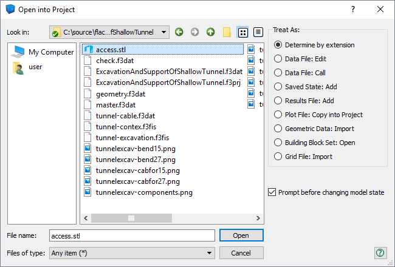
图 1：本程序的“打开到项目”对话框。
也可以通过命令创建几何数据。例如，创建几何多边形命令（geometry polygon create） 命令可直接向几何集合添加多边形。例如，
geometry polygon create by-positions (0,0,0) (1,0,0) (1,1,0) (0,1,0)
将向当前几何集合添加一个简单四边形。
此外，可通过 FISH 访问所有集合中的全部数据，函数列表见几何体 FISH 函数（Geometry FISH Functions）。FISH 既可修改，也可创建几何数据。例如，以下简单 FISH 函数先创建名为“FISH Example”的几何集合，再添加构成圆柱体的多边形：
示例：“fish_cylinder.fis”
model new
fish define fish_cylinder(start,radius,height,segments)
local gset = geom.set.find("FISH Example")
if gset = null then
gset = geom.set.create("FISH Example")
endif
loop local i (1,segments)
local ang1 = float(i-1) * math.pi * 2.0 / float(segments)
local ang2 = float(i) * math.pi * 2.0 / float(segments)
local p1 = start + vector(math.cos(ang1),math.sin(ang1),0.0)
local p2 = start + vector(math.cos(ang2),math.sin(ang2),0.0)
local p3 = vector(p2->x,p2->y,height)
local p4 = vector(p1->x,p1->y,height)
local poly = geom.poly.create(gset)
geom.poly.add.node(gset,poly,p1)
geom.poly.add.node(gset,poly,p2)
geom.poly.add.node(gset,poly,p3)
geom.poly.add.node(gset,poly,p4)
geom.poly.close(gset,poly)
end_loop
end
[fish_cylinder((0,0,0),1.0,4.0,40)]
结果如下。下图无图注。

几何体可视化
可在 i 绘图（Plot）窗格中显示几何数据。使用对话框时，几何体会自动显示在一个新图形中。
如果在命令提示符处通过命令添加集合，则需手动将其添加到图形中才能看见。操作如下：
- 创建图形（或
Ctrl + Shift + N）。- 使用构建图形（Build Plot）工具（
）打开构建图形（Build plot）对话框，从“用户自定义数据（User Defined Data）”类别的列表中选择“几何体（Geometry）”。
- 在“属性（Attributes）”中，确保“集合（Sets）”控件已选择所需集合。（注意：利用该控件，可以在同一个绘图项中显示多个集合。）
几何体着色映射
为帮助显示模型变量相对于几何数据的变化，可使用网格单元数据，将数值“映射”到几何节点上。随后可绘制这些数值的等值线，显示模型变量与未显式建模几何特征之间的关系。
将“类型（Type）”属性改为“等值线（Contour）”，将“等值线依据（ContourBy）”改为“场数据（FieldData）”，即可从全部网格单元场变量列表中选择。此数据仅用于绘图，不进入模型状态。
不过，将场值绘制到几何节点命令（geometry paint-extra） 命令可以将模型中的网格单元场数据值“映射”到几何节点存储的附加变量。例如，要将模型中的最小主应力映射到当前几何集合，可使用命令
geometry paint-extra 2 stress quantity minimum
该命令计算当前集合全部节点位置处的最小主应力，并赋予索引为 2 的附加变量。可用网格单元场变量的完整列表见 将场值绘制到几何节点命令（geometry paint-extra） 命令文档。
可使用几何体（Geometry）绘图项显示映射结果，属性设置为“Type” = “Contour”、“Contour By” = “Node Extra”、“Index” = “2”。下图示例将位移大小映射到主要开挖区域旁的一条简单隧道上。

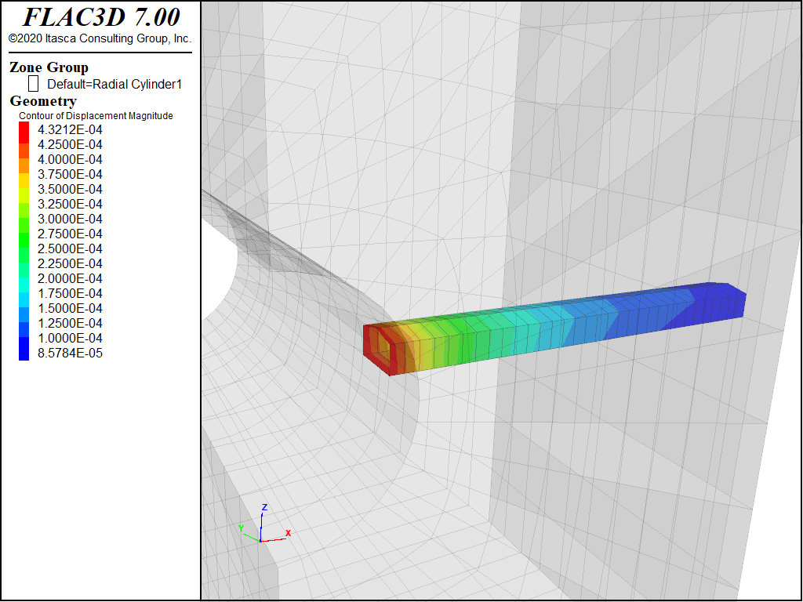
图 3：映射到几何体上的位移大小。

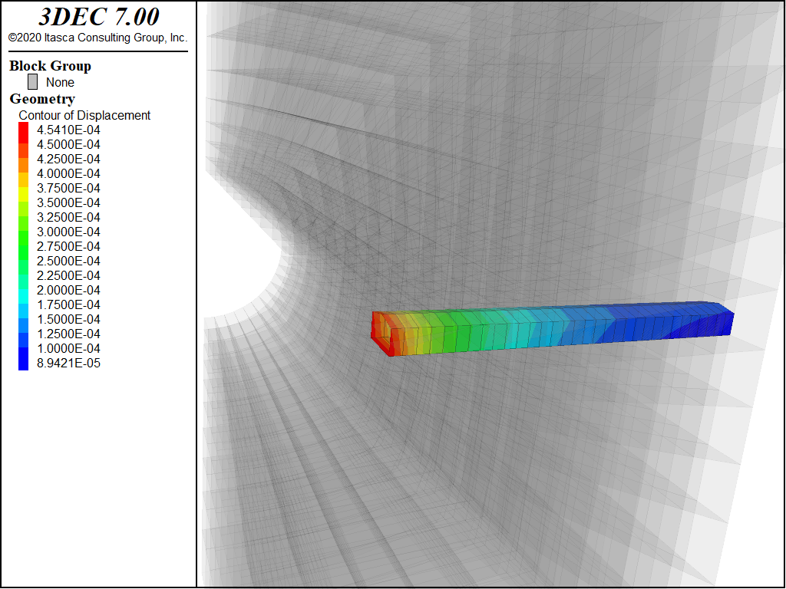
图 4：映射到几何体上的位移大小。
几何筛选——几何范围元素
在 FLAC3D 中选择对象的主要方式，是提供筛选条件，确定某条命令影响的对象。这通过 范围（range） 逻辑实现。有两个范围元素（range element）可根据对象与几何集合数据的关系进行筛选：geometry-distance 和 geometry-space。
geometry-distance 范围元素可用于选取落在几何集数据给定距离之内的对象，包括多边形、自由边和自由节点。对象形心到该几何集中任一数据的最小距离决定其距离值。
extent 关键字适用于 geometry-distance 范围元素，用于查找至对象笛卡尔坐标包围范围的最小距离。将距离值设为零，可近似选出实际与几何集合相交的全部对象。例如，结合上述数据，以下命令可将所有包围范围与“intcylinder”几何集合相交的网格单元块体归入“Intersect”分组。
zone group "Intersect" range geometry-distance "intcylinder" gap 0.0 extent
该操作结果如下所示。

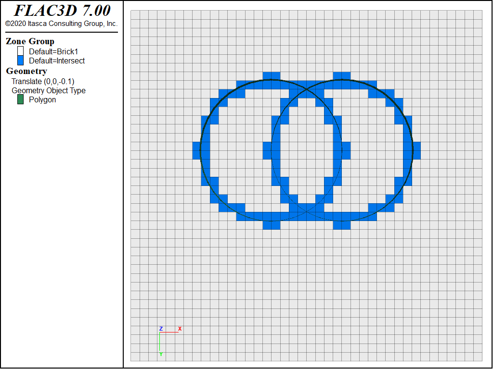
图 5：geometry dist 范围元素选出的网格单元。
block group 'Intersect' range geometry-distance 'intcylinder' gap 0.0 extent
该操作结果如下所示。

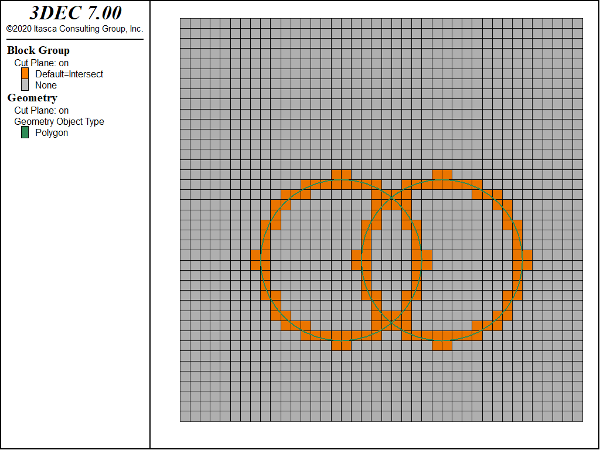
图 6：geometry dist 范围元素选出的块体。
geometry-space 范围元素根据从对象出发的射线与几何集中多边形相交的次数来选取对象。若相交次数与给定数目一致，则认为该对象被选中。这可用于识别位于几何面（如地形面）之上或之下的对象。
下例沿 x 正方向投射射线，选出右侧圆柱体内部的全部对象，因为从其质心发出的射线只与圆柱体相交一次。
zone group "Count 1" range geometry-space "intcylinder" ...
count 1 direction (1,0,0)

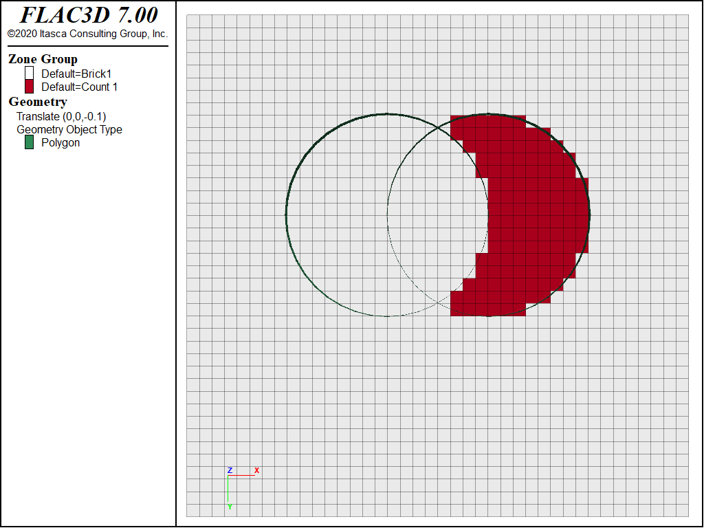
图 7：geometry count 范围元素选出的网格单元。
block group 'Count 1' range geometry-space 'intcylinder' ...
count 1 direction 1 0 0

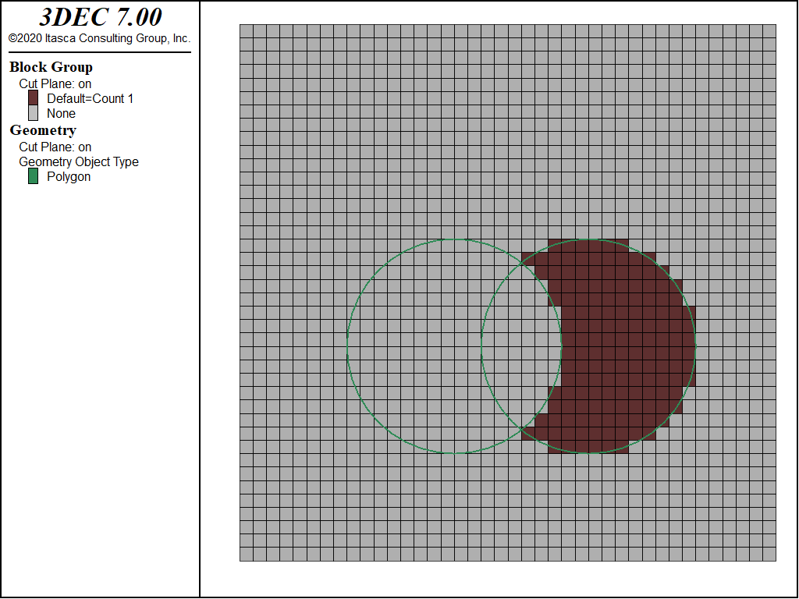
图 8：geometry count 范围元素选出的块体。
一种特殊用法是，在 geometry count 范围元素中，用关键字 odd 或 even 代替计数值。如果几何集合实际上构成封闭体积，odd 将选择内部全部对象，even 将选择外部全部对象。程序不会检查多边形是否确实构成单个封闭曲面。命令
zone group "Count Odd" range geometry-space "intcylinder" ...
count odd direction (1,0,0)
block group 'Inside' range geometry-space 'intcylinder' ...
count odd direction 1 0 0
的结果见下图。注意，相交圆柱体几何集合不构成单个封闭曲面，因此该范围元素不会选择二者共有区域中的网格单元。

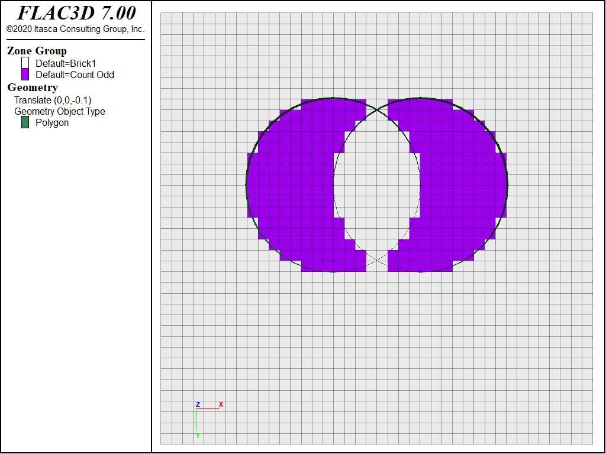
图 9：geometry count 范围元素使用 odd 关键字选出的网格单元。

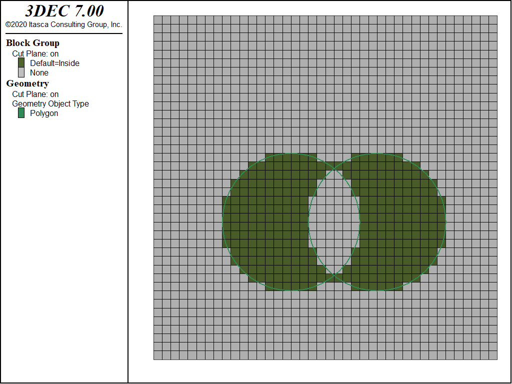
图 10：geometry count 范围元素使用 odd 关键字选出的块体。
如果几何集合确实构成拓扑完全封闭的体积，则可以使用 inside 和 outside 关键字代替 count 关键字选择对象。
几何数据与分组赋予
有时需要选择落在复杂几何数据界定的空间区域中的对象。这些数据未必能清楚分成可归入不同几何集合的独立曲面。有时数据关系复杂，手动识别特定区域，例如在此曲面上方、彼曲面后方及另一曲面前方，非常繁琐。为几何对象分配分组命令（geometry assign-groups） 命令可以同时根据对象与全部这些曲面的关系，赋予分组名称。
该操作首先为构成单个连续曲面的全部多边形赋予唯一 ID。具体而言，同一集合中通过边相连的所有多边形获得相同 ID。随后，从对象质心发出射线穿过这些多边形，并根据射线与各 ID 多边形的相交次数生成分组名称。
作为简单示例，使用由两个相交圆柱体组成的几何集合。通过以下命令，使用 为几何对象分配分组命令（geometry assign-groups） 按对象与曲面的关系赋予分组名称：
geometry assign-groups zone projection (1,0,0) set 'intcylinder'
geometry assign-groups block projection (1,0,0) set 'intcylinder'
下图在穿过模型的切割平面上，显示赋予网格单元的分组名称。每个字母代表由曲面 ID 和相交次数确定的不同相交区域。

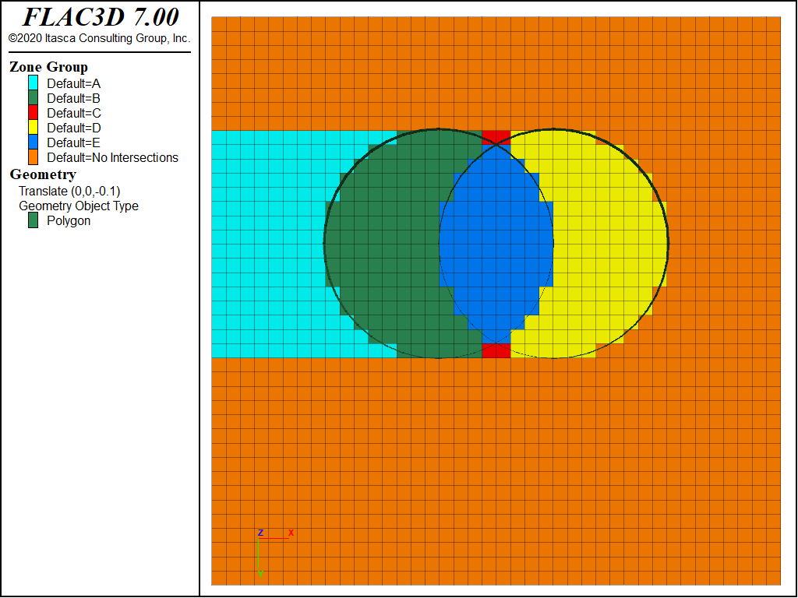
图 11：由 为几何对象分配分组命令（geometry assign-groups） 命令赋予的分组。

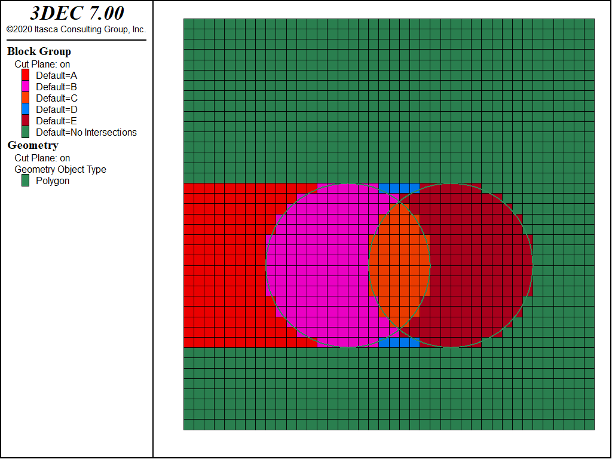
图 12：由 为几何对象分配分组命令（geometry assign-groups） 命令赋予的分组。
该操作几乎适用于任何对象，包括网格单元、网格点、用户自定义数据和结构单元对象（单元、节点及连接）。
虽然 为几何对象分配分组命令（geometry assign-groups） 命令能够快速将对象分到不同几何区域，但也存在限制。用户无法控制曲面所分配的 ID，而且必须通过目视检查，确定目标区域被赋予了什么分组名称。通常还需要合并多个分组，形成实际关注区域。
几何数据可用于多种网格单元生成和配置任务，例如：
- 希望沿多个曲面，从已有 FLAC3D 模型中划分分组；
- 已有网格，并给定若干表示逐年开挖面的 DXF 文件，希望为每年将开挖的网格单元赋予不同分组；
- 希望为距一组断层 10 m 范围内的网格单元赋予遍布节理属性；以及
- 希望先细化 FLAC3D 模型，再将某组网格单元标识为软弱材料。
以下示例说明如何利用几何数据实现这些目标。
| 标题 | |
|---|---|
| 示例 1 | 根据与 DXF 文件的关系赋予分组名称 |
| 示例 2 | 忽略已有分组——根据曲面建立新分组 |
| 示例 3 | 根据曲面分割已有分组 |
| 示例 4 | 曲面下方网格单元成为独立分组——外部分组保持不变 |
| 示例 5 | 曲面上方网格单元成为新分组——下方全部保持不变 |
| 示例 6 | 与曲面相交的网格单元成为独立分组 |
| 示例 7 | 分割曲面下方的网格单元 |
| 示例 8 | 分割与曲面相交的大网格单元 |
运行 FLAC3D 并调用以下数据文件，创建名为“dummy1”“dummy2”和“dummy3”的三个分组：
示例：“Example_1.dat”
;建立包含三个分组的模型
model new
zone create brick size (50,50,50) point 0 (2700,-10500,-1000) ...
edge 4000 group 'dummy3'
zone delete range position-z 0 1000000
geometry import 's1.dxf'
zone group 'dummy1' ...
range geometry-space 's1' count 1 direction (0,1,0)
geometry import 's2.dxf'
zone group 'dummy2' ...
range geometry-space 's2' count 1 direction (1,0,0) group 'dummy3'
创建图形（Ctrl + Shift + N），使用“构建图形（Build Plot）”工具（），将网格单元分组表面和几何体添加到图中。在控制面板中选择“Zone Group Default”项，再将“槽位（Slot）”属性设为“Default”。选择“Geometry Type”项，展开“集合（Sets）”属性，勾选“s2”集合，并勾选“透明（transparency）”。单击绘图窗口将其激活，按“i”获得模型轴测视图，如下所示。

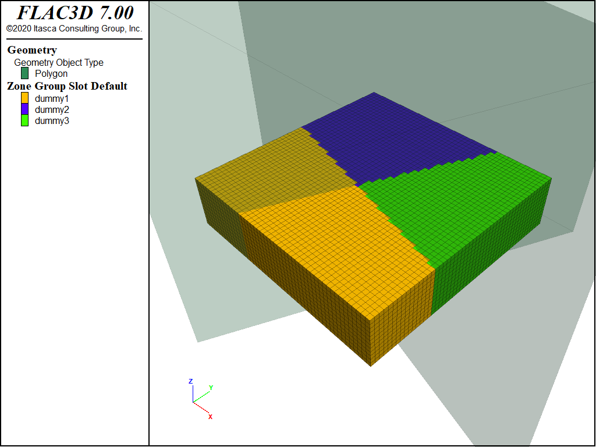
图 13：已分组的模型与两个曲面
将使用三个曲面，以几种不同方式把该模型划分成多个分组。这三个曲面分别存储在“Y0.dxf”“Y1.dxf”和“Y2.dxf”三个 DXF 文件中。可以将其理解为露天矿第 0 年、第 1 年和第 2 年的三个开挖面。下图显示绘出这些曲面后的模型；这些 DXF 文件将在下一个数据文件示例中导入。

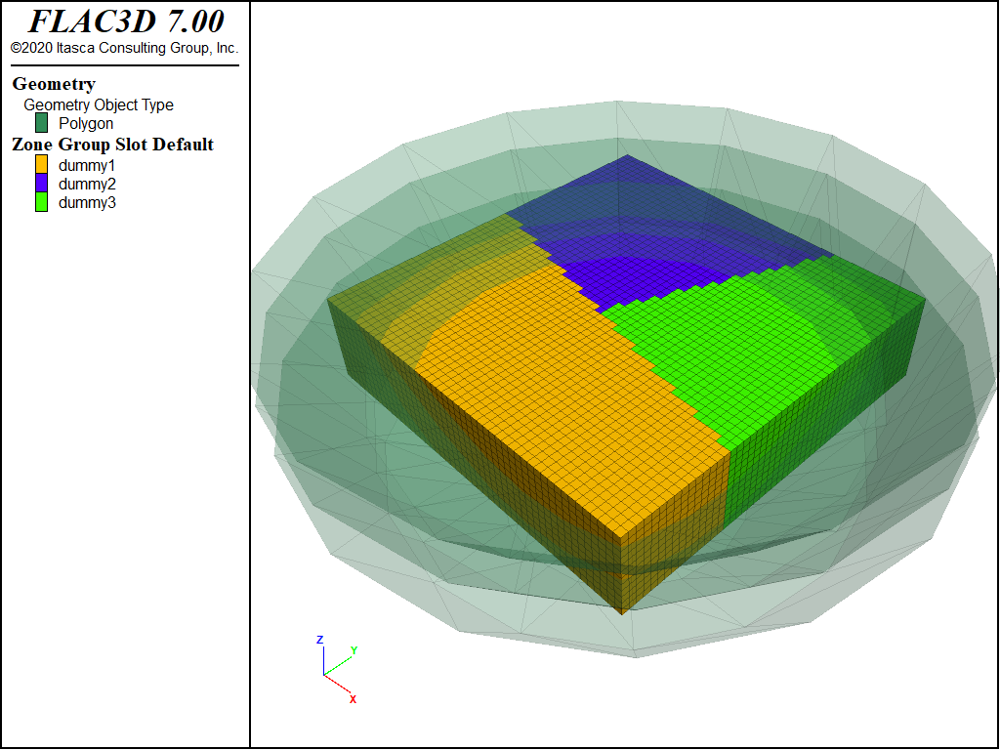
图 14：用于通过几何数据划分模型的三个曲面
将已有分组重命名为“old”，并根据曲面创建新分组，见下图。
示例：“Example_2.dat”
;忽略现有分组，按曲面建立新分组
;SpaceRanger 选项 0
geometry import 'Y0.dxf'
geometry import 'Y1.dxf'
geometry import 'Y2.dxf'
zone group 'OLD'
zone group 'NEW_1' range geometry-space 'Y0' count odd
zone group 'NEW_2' range geometry-space 'Y1' count odd
zone group 'NEW_3' range geometry-space 'Y2' count odd

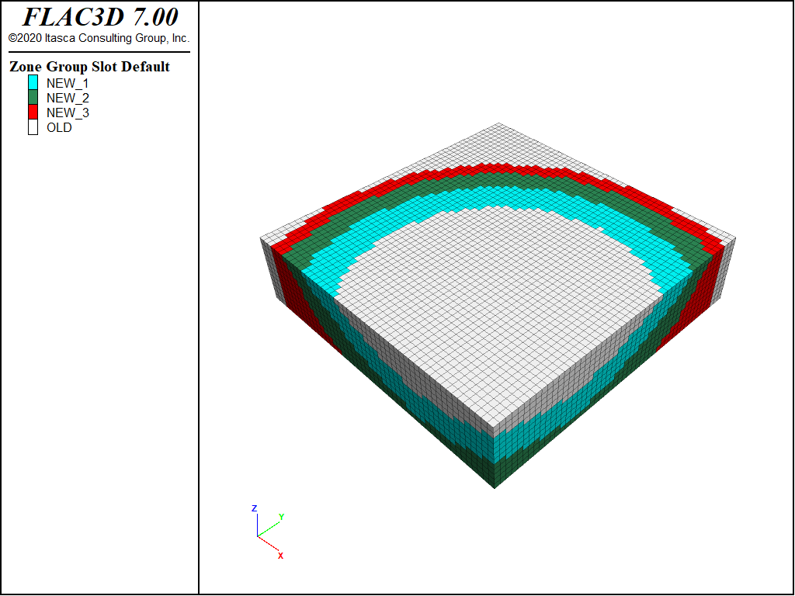
图 15：忽略已有分组——根据曲面建立新分组
曲面外部或上方的网格单元保留原分组编号。任一曲面内部或下方的网格单元沿曲面划分为新分组，见下图。
示例：“Example 3.dat”
;按曲面划分现有分组
; SpaceRanger 选项 1
model new
zone create brick size (50,50,50) point 0 (2700,-10500,-1000) ...
edge 4000 group 'dummy3'
zone delete range position-z 0 1000000;
geometry import 's1.dxf'
zone group 'dummy1' range geometry-space 's1' count 1 direction (0,1,0)
geometry import 's2.dxf'
zone group 'dummy2' ...
range geometry-space 's2' count 1 direction (1,0,0) group 'dummy3'
geometry import 'Y0.dxf'
geometry import 'Y1.dxf'
geometry import 'Y2.dxf'
zone group 'NEW_1' range geometry-space 'Y0' count odd group 'dummy1'
zone group 'NEW_2' range geometry-space 'Y0' count odd group 'dummy2'
zone group 'NEW_3' range geometry-space 'Y0' count odd group 'dummy3'
zone group 'NEW_4' range geometry-space 'Y1' count odd group 'NEW_1'
zone group 'NEW_5' range geometry-space 'Y1' count odd group 'NEW_2'
zone group 'NEW_6' range geometry-space 'Y1' count odd group 'NEW_3'
zone group 'NEW_7' range geometry-space 'Y2' count odd group 'NEW_4'
zone group 'NEW_8' range geometry-space 'Y2' count odd group 'NEW_5'
zone group 'NEW_9' range geometry-space 'Y2' count odd group 'NEW_6'

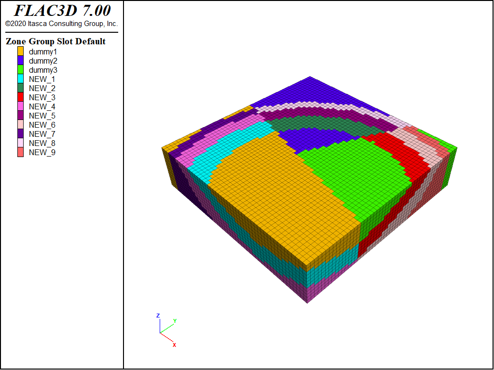
图 16：划分曲面下方的全部区域
曲面内部或下方的全部对象均被划分；外部或上方的全部对象保留原分组编号，见下图。
;曲面下方的网格单元成为独立分组……
; 外部分组保持不变
;SpaceRanger 选项 2
model new
zone create brick size (50,50,50) point 0 (2700,-10500,-1000) ...
edge 4000 group 'dummy3'
zone delete range position-z 0 1000000
geometry import 's1.dxf'
zone group 'dummy1' range geometry-space 's1' count 1 direction (0,1,0)
geometry import 's2.dxf'
zone group 'dummy2' ...
range geometry-space 's2' count 1 direction (1,0,0) group 'dummy3'
geometry import 'Y0.dxf'
geometry import 'Y1.dxf'
geometry import 'Y2.dxf'
zone group 'NEW_1' range geometry-space 'Y0' count odd
zone group 'NEW_2' range geometry-space 'Y1' count odd
zone group 'NEW_3' range geometry-space 'Y2' count odd

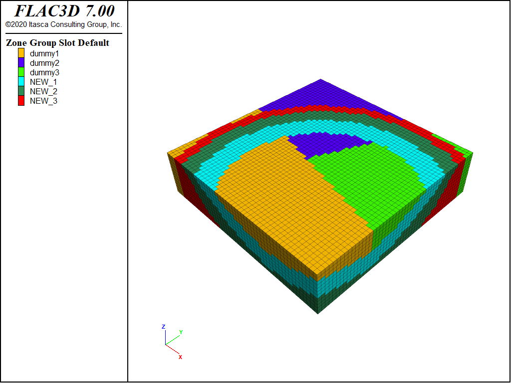
图 17：SpaceRanger 选项 2
位于全部三个曲面上方的网格单元成为一个新分组。
;曲面上方的网格单元组成一个新分组，
; 下方全部保持不变
;SpaceRanger 选项 3
model new
zone create brick size (50,50,50) point 0 (2700,-10500,-1000) ...
edge 4000 group 'dummy3'
zone delete range position-z 0 1000000
geometry import 's1.dxf'
zone group 'dummy1' range geometry-space 's1' count 1 direction (0,1,0)
geometry import 's2.dxf'
zone group 'dummy2' ...
range geometry-space 's2' count 1 direction (1,0,0) group 'dummy3'
geometry import 'Y0.dxf'
geometry import 'Y1.dxf'
geometry import 'Y2.dxf'
zone group 'NEW_1' range geometry-space 'Y0' count odd not ...
geometry-space 'Y1' count odd not ...
geometry-space 'Y1' count odd not

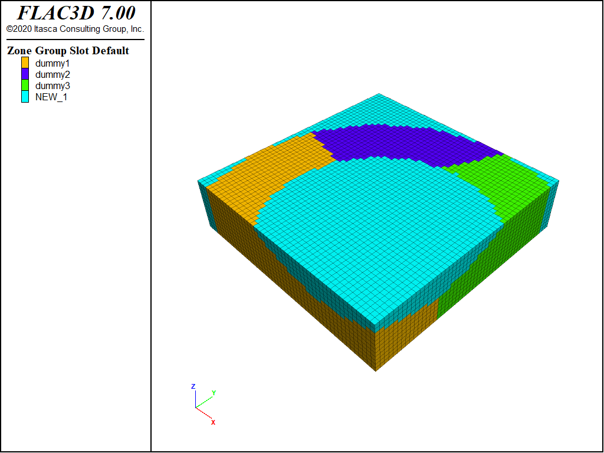
图 18：SpaceRanger 选项 3
与曲面相交或距曲面不超过 80 m 的网格单元，分别归入 New 1、New 2 和 New 3 分组，见下图。
;与曲面相交且位于 80 m 范围内的网格单元成为独立分组
;SpaceRanger 选项 4
model new
zone create brick size (50,50,50) point 0 (2700,-10500,-1000) ...
edge 4000 group 'dummy3'
zone delete range position-z 0 1000000
geometry import 's1.dxf'
zone group 'dummy1' range geometry-space 's1' count 1 direction (0,1,0)
geometry import 's2.dxf'
zone group 'dummy2' ...
range geometry-space 's2' count 1 direction (1,0,0) group 'dummy3'
geometry import 'Y0.dxf'
geometry import 'Y1.dxf'
geometry import 'Y2.dxf'
zone group 'NEW_1' range geometry-distance 'Y0' gap 80 extent
zone group 'NEW_2' range geometry-distance 'Y1' gap 80 extent
zone group 'NEW_3' range geometry-distance 'Y2' gap 80 extent

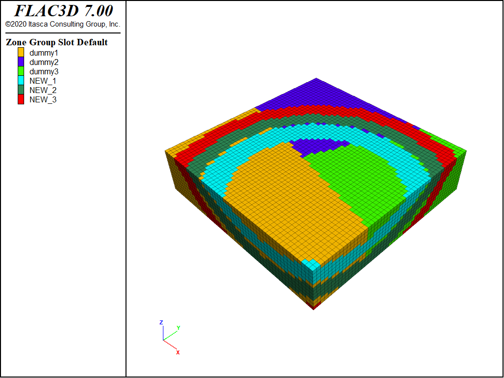
图 19：SpaceRanger 选项 4
先细化 Y0 下方网格单元，再细化 Y1 下方网格单元，最后细化 Y2 下方网格单元，见下图。
; 细分曲面下方的网格单元
; 优于 SpaceRanger 选项 5
model new
zone create brick size (50,50,50) point 0 (2700,-10500,-1000) ...
edge 4000 group 'dummy3'
zone delete range position-z 0 1000000
geometry import 's1.dxf'
zone group 'dummy1' range geometry-space 's1' count 1 direction (0,1,0)
geometry import 's2.dxf'
zone group 'dummy2' ...
range geometry-space 's2' count 1 direction (1,0,0) group 'dummy3'
geometry import 'Y0.dxf'
geometry import 'Y1.dxf'
geometry import 'Y2.dxf'
zone densify segments 2 range geometry-space 'Y0' count odd
zone densify segments 2 range geometry-space 'Y1' count odd
; 跳过第三级加密，使模型足够小，
; 能够在 32 位版本中运行。
;generate zone densify nsegment 2 range geometry Y2 count odd

细化距曲面不超过 80 m 的网格单元，同时确保不生成小于 40 m 的网格单元，见下图。
; 细分与曲面相交的大网格单元，最小尺寸不小于 40 m
model new
zone create brick size (50,50,50) point 0 (2700,-10500,-1000) ...
edge 4000 group 'dummy3'
zone delete range position-z 0 1000000
geometry import 's1.dxf'
zone group 'dummy1' range geometry-space 's1' count 1 direction (0,1,0)
geometry import 's2.dxf'
zone group 'dummy2' ...
range geometry-space 's2' count 1 direction (1,0,0) group 'dummy3'
geometry import 'Y0.dxf'
geometry import 'Y1.dxf'
geometry import 'Y2.dxf'
zone densify segments 2 edge-limit 50 ...
range geometry-distance 'Y0' gap 80 extent
zone densify segments 2 edge-limit 50 ...
range geometry-distance 'Y1' gap 80 extent
zone densify segments 2 edge-limit 50 ...
range geometry-distance 'Y2' gap 80 extent

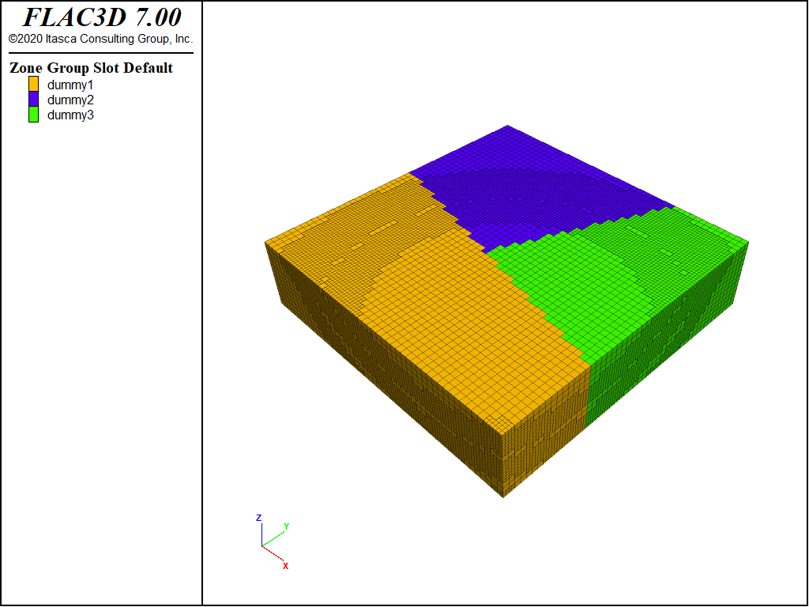
图 21：SpaceRanger 选项 6
几何数据可用于多种块体生成和配置任务，例如：
- 希望沿多个曲面，从已有 3DEC 模型中划分分组；
- 已有网格，并给定若干表示逐年开挖面的 DXF 文件，希望为每年将开挖的块体赋予不同分组；
- 希望为距一组断层 10 m 范围内的网格单元赋予遍布节理属性；以及
- 希望先细化 3DEC 模型，再将某组网格单元标识为软弱材料。
以下示例说明如何利用几何数据实现这些目标。
| 标题 | |
|---|---|
| 示例 1 | 根据与 DXF 文件的关系赋予分组名称 |
| 示例 2 | 忽略已有分组——根据曲面建立新分组 |
| 示例 3 | 根据曲面分割已有分组 |
| 示例 4 | 曲面下方网格单元成为独立分组——外部分组保持不变 |
| 示例 5 | 曲面上方网格单元成为新分组——下方全部保持不变 |
| 示例 6 | 与曲面相交的网格单元成为独立分组 |
| 示例 7 | 分割曲面下方的网格单元 |
| 示例 8 | 分割与曲面相交的大网格单元 |
运行 3DEC 并调用以下数据文件，创建名为“dummy1”“dummy2”和“dummy3”的三个分组：
示例：“Example_1.dat”
;建立包含三个分组的模型
model new
block create brick 2700 6700 -10500 -6500 -1000 0
block densify segments 50 50 10 hex
block group 'dummy3'
;
geometry import 's1.dxf'
block group 'dummy1' range geometry-space 's1' count 1 direction 0 1 0
geometry import 's2.dxf'
block group 'dummy2' range geometry-space 's2' ...
count 1 direction 1 0 0 group 'dummy3'
创建图形（Ctrl + Shift + N），使用“构建图形（Build Plot）”工具（），将块体分组表面和几何体添加到图中。在控制面板中选择“Block Group Default”项，再将“槽位（Slot）”属性设为“Default”。选择“Geometry Type”项，展开“集合（Sets）”属性，勾选“s2”集合，并勾选“透明（transparency）”。单击绘图窗口将其激活，按“i”获得模型轴测视图，如下所示。

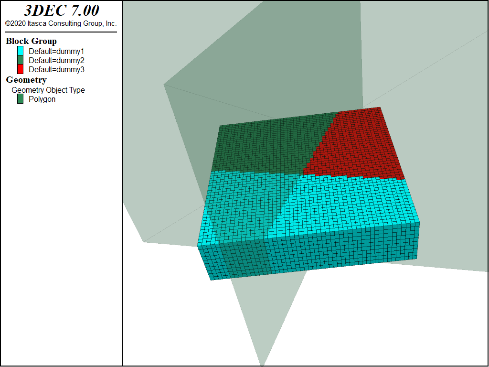
图 22：已分组的模型与两个曲面
将使用三个曲面，以几种不同方式把该模型划分成多个分组。这三个曲面分别存储在“Y0.dxf”“Y1.dxf”和“Y2.dxf”三个 DXF 文件中。可以将其理解为露天矿第 0 年、第 1 年和第 2 年的三个开挖面。下图显示绘出这些曲面后的模型；这些 DXF 文件将在下一个数据文件示例中导入。

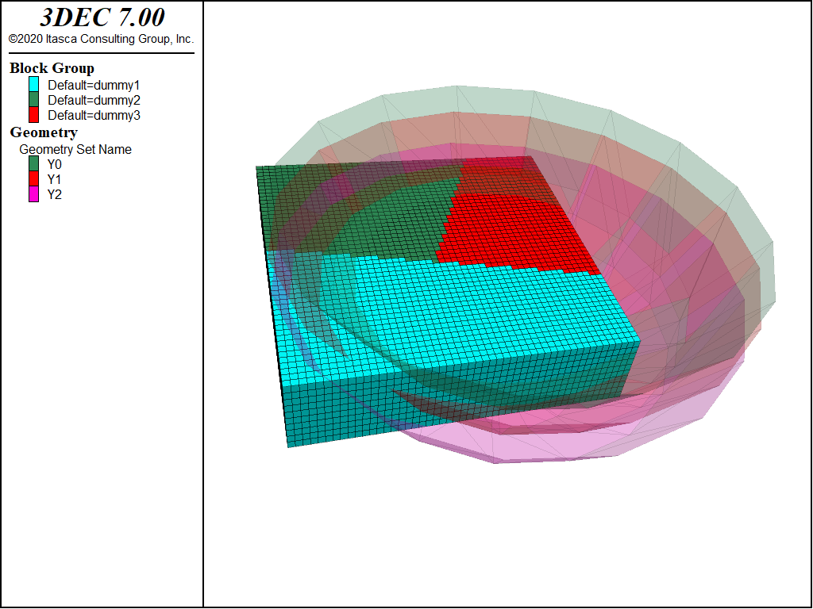
图 23：用于通过几何数据划分模型的三个曲面
将已有分组重命名为“old”，并根据曲面创建新分组，见下图。
示例：“Example_2.dat”
;忽略现有分组，按曲面建立新分组
geometry import 'Y0.dxf'
geometry import 'Y1.dxf'
geometry import 'Y2.dxf'
block group 'OLD'
block group 'NEW_1' range geometry-space 'Y0' count odd
block group 'NEW_2' range geometry-space 'Y1' count odd
block group 'NEW_3' range geometry-space 'Y2' count odd

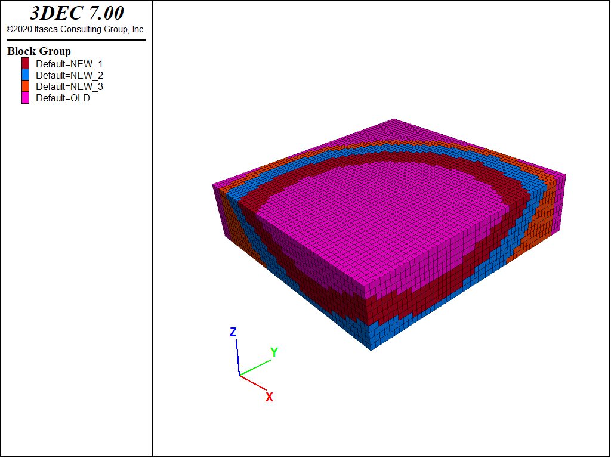
图 24：忽略已有分组——根据曲面建立新分组
曲面外部或上方的块体保留原分组编号。任一曲面内部或下方的块体沿曲面划分为新分组，见下图。
示例：“Example 3.dat”
;按曲面划分现有分组
model new
block create brick 2700 6700 -10500 -6500 -1000 0
block densify segments 50 50 10
block group 'dummy3'
geometry import 's1.dxf'
block group 'dummy1' range geometry-space 's1' count 1 direction 0 1 0
geometry import 's2.dxf'
block group 'dummy2' range geometry-space 's2' count 1 direction 1 0 0 group 'dummy3'
geometry import 'Y0.dxf'
geometry import 'Y1.dxf'
geometry import 'Y2.dxf'
block group 'NEW_1' range geometry-space 'Y0' count odd group 'dummy1'
block group 'NEW_2' range geometry-space 'Y0' count odd group 'dummy2'
block group 'NEW_3' range geometry-space 'Y0' count odd group 'dummy3'
block group 'NEW_4' range geometry-space 'Y1' count odd group 'NEW_1'
block group 'NEW_5' range geometry-space 'Y1' count odd group 'NEW_2'
block group 'NEW_6' range geometry-space 'Y1' count odd group 'NEW_3'
block group 'NEW_7' range geometry-space 'Y2' count odd group 'NEW_4'
block group 'NEW_8' range geometry-space 'Y2' count odd group 'NEW_5'
block group 'NEW_9' range geometry-space 'Y2' count odd group 'NEW_6'

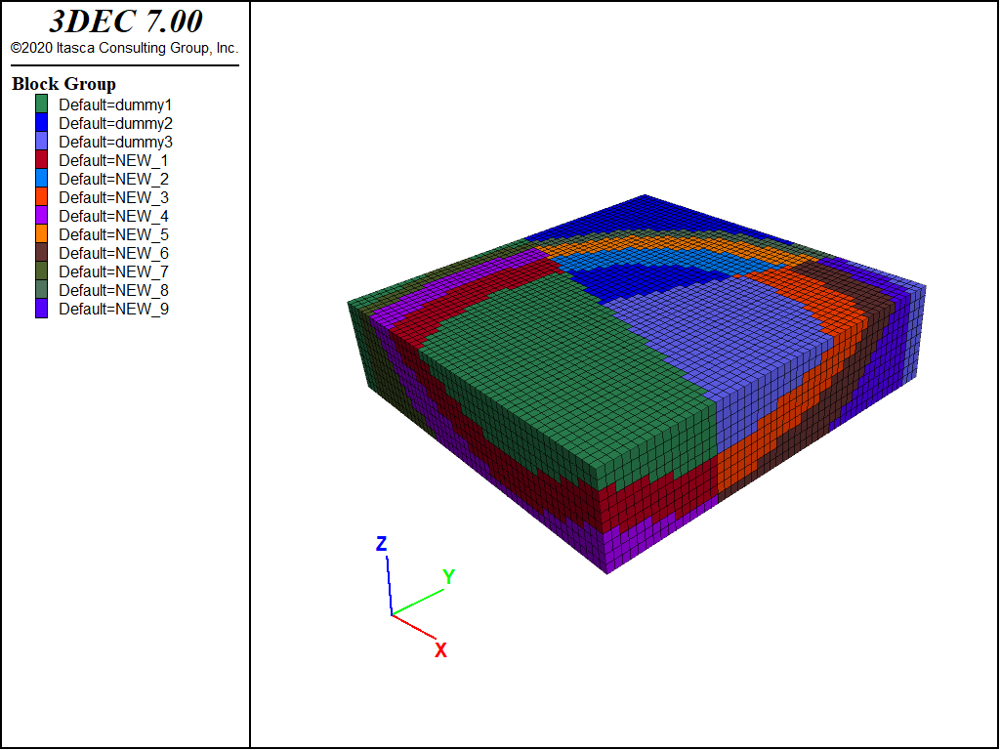
图 25：划分曲面下方的全部区域
曲面内部或下方的全部对象均被划分；外部或上方的全部对象保留原分组编号，见下图。
;曲面下方的块体成为独立分组，并且
; 外部分组保持不变
model new
block create brick 2700 6700 -10500 -6500 -1000 0
block densify segments 50 50 10 hex
block group 'dummy3'
geometry import 's1.dxf'
block group 'dummy1' range geometry-space 's1' count 1 direction 0 1 0
geometry import 's2.dxf'
block group 'dummy2' range geometry-space 's2' ...
count 1 direction 1 0 0 group 'dummy3'
geometry import 'Y0.dxf'
geometry import 'Y1.dxf'
geometry import 'Y2.dxf'
block group 'NEW_1' range geometry-space 'Y0' count odd
block group 'NEW_2' range geometry-space 'Y1' count odd
block group 'NEW_3' range geometry-space 'Y2' count odd

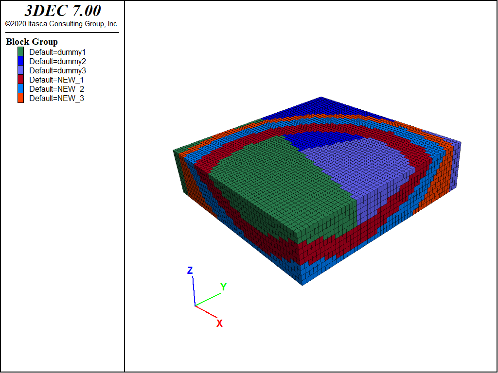
图 26：划分曲面内部或下方的全部区域
位于全部三个曲面上方的块体成为一个新分组。
;曲面上方的块体组成一个新分组，
; 下方全部保持不变
model new
block create brick 2700 6700 -10500 -6500 -1000 0
block densify segments 50 50 10 hex
block group 'dummy3'
geometry import 's1.dxf'
block group 'dummy1' range geometry-space 's1' count 1 direction 0 1 0
geometry import 's2.dxf'
block group 'dummy2' range geometry-space 's2' ...
count 1 direction 1 0 0 group 'dummy3'
geometry import 'Y0.dxf'
geometry import 'Y1.dxf'
geometry import 'Y2.dxf'
block group 'NEW_1' range geometry-space 'Y0' count odd not ...
geometry-space 'Y1' count odd not geometry-space 'Y1' count odd not

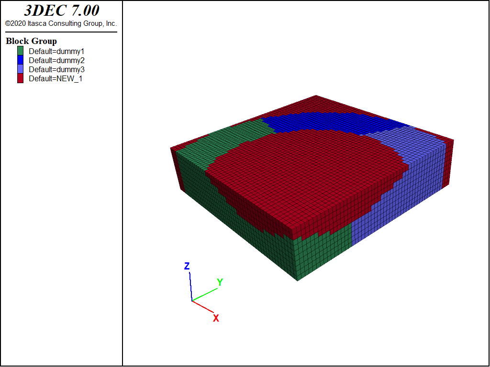
图 27：识别曲面上方的块体
与曲面相交或距曲面不超过 80 m 的块体，分别归入 New 1、New 2 和 New 3 分组，见下图。
;与曲面相交且位于 40 m 范围内的块体成为独立分组
model new
block create brick 2700 6700 -10500 -6500 -1000 0
block densify segments 50 50 12 hex
block group 'dummy3'
geometry import 's1.dxf'
block group 'dummy1' range geometry-space 's1' count 1 direction 0 1 0
geometry import 's2.dxf'
block group 'dummy2' range geometry-space 's2' ...
count 1 direction 1 0 0 group 'dummy3'
geometry import 'Y0.dxf'
geometry import 'Y1.dxf'
geometry import 'Y2.dxf'
block group 'NEW_1' range geometry-distance 'Y0' gap 40 extent
block group 'NEW_2' range geometry-distance 'Y1' gap 40 extent
block group 'NEW_3' range geometry-distance 'Y2' gap 40 extent

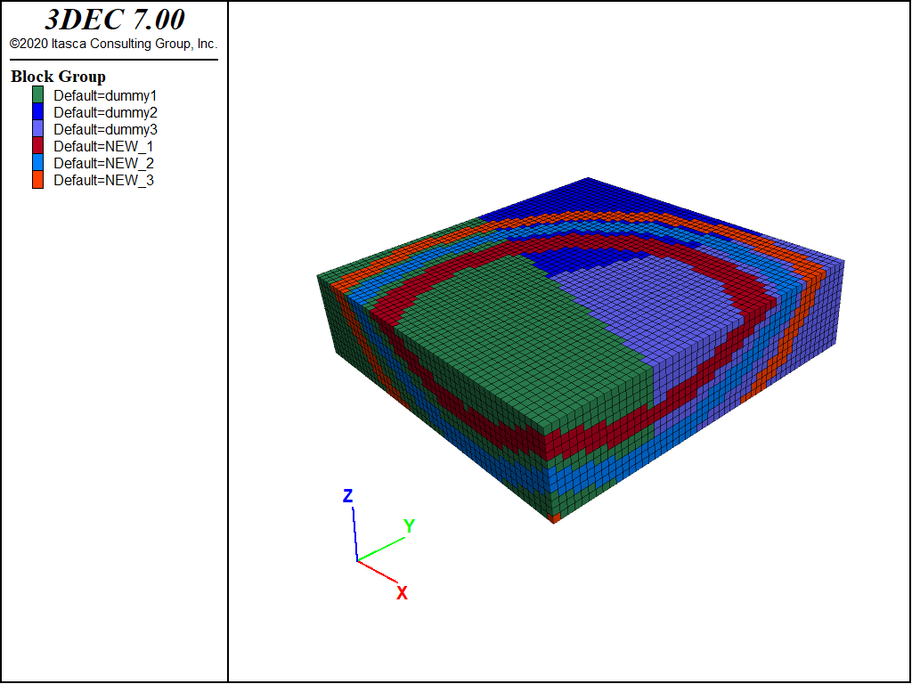
图 28：识别曲面附近的块体
先细化 Y0 下方块体，再细化 Y1 下方块体，最后细化 Y2 下方块体，见下图。
; 细分曲面下方的块体
model new
block create brick 2700 6700 -10500 -6500 -1000 0
block densify segments 10 10 2 hex
block group 'dummy3'
geometry import 's1.dxf'
block group 'dummy1' range geometry-space 's1' count 1 direction 0 1 0
geometry import 's2.dxf'
block group 'dummy2' range geometry-space 's2' ...
count 1 direction 1 0 0 group 'dummy3'
geometry import 'Y0.dxf'
geometry import 'Y1.dxf'
geometry import 'Y2.dxf'
block densify segments 2 range geometry-space 'Y0' count odd
block densify segments 2 range geometry-space 'Y1' count odd

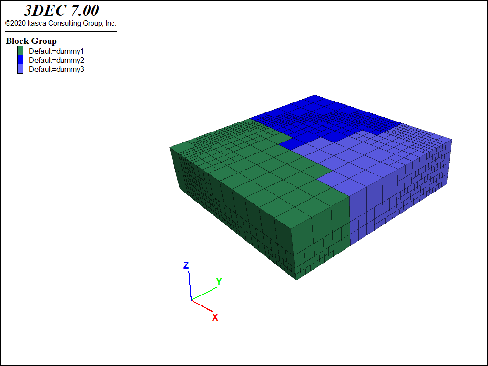
图 29：分割曲面下方的块体
细化距曲面不超过 80 m 的块体，同时确保不生成小于 40 m 的块体，见下图。
; 细分与曲面相交的大块体，最小尺寸不小于 100 m
model new
block create brick 2700 6700 -10500 -6500 -1000 0
block densify segments 20 20 4 hex
block group 'dummy3'
geometry import 's1.dxf'
block group 'dummy1' range geometry-space 's1' count 1 direction 0 1 0
geometry import 's2.dxf'
block group 'dummy2' range geometry-space 's2' count 1 direction 1 0 0 group 'dummy3'
geometry import 'Y0.dxf'
geometry import 'Y1.dxf'
geometry import 'Y2.dxf'
;
block densify segments 2 maximum-length 100 repeat ...
range geometry-distance 'Y0' gap 80 extent
block densify segments 2 maximum-length 100 repeat ...
range geometry-distance 'Y1' gap 80 extent
block densify segments 2 maximum-length 100 repeat ...
range geometry-distance 'Y2' gap 80 extent

| 这些内容对您有帮助吗？… | FLAC3D © 2019, Itasca | 原文更新于 2020 年 10 月 8 日 |